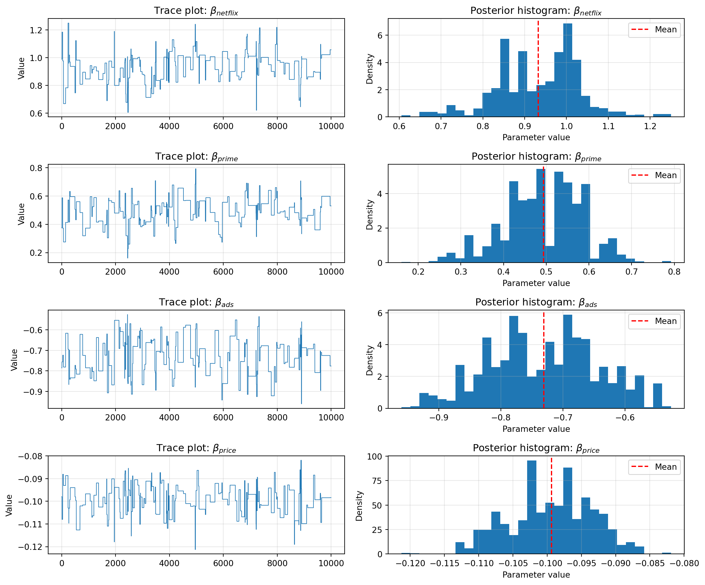

import numpy as np
import pandas as pd
# Set random seed
np.random.seed(123)
# Define attribute levels
brands = ["N", "P", "H"] # Netflix, Prime, Hulu
ads = ["Yes", "No"]
prices = list(range(8, 33, 4)) # from 8 to 32 by 4
# Generate full factorial design
import itertools
profiles = pd.DataFrame(
list(itertools.product(brands, ads, prices)),
columns=["brand", "ad", "price"])
# Utility functions (true parameters)
brand_utils = {"N": 1.0, "P": 0.5, "H": 0.0}
ad_utils = {"Yes": -0.8, "No": 0.0}
price_util = lambda p: -0.1 * p
# Settings
n_peeps = 100
n_tasks = 10
n_alts = 3
# Function to simulate one respondent
def simulate_respondent(pid):
respondent_data = []
for task in range(1, n_tasks + 1):
alts = profiles.sample(n=n_alts).copy()
alts["resp"] = pid
alts["task"] = task
# Calculate deterministic utility
alts["v"] = (
alts["brand"].map(brand_utils) +
alts["ad"].map(ad_utils) +
alts["price"].apply(price_util)
).round(10)
# Add Gumbel-distributed error (Type I Extreme Value)
gumbel_noise = -np.log(-np.log(np.random.rand(n_alts)))
alts["u"] = alts["v"] + gumbel_noise
# Choose the alternative with max utility
alts["choice"] = (alts["u"] == alts["u"].max()).astype(int)
respondent_data.append(alts)
return pd.concat(respondent_data, ignore_index=True)
# Simulate for all respondents
df_list = [simulate_respondent(i) for i in range(1, n_peeps + 1)]
conjoint_data = pd.concat(df_list, ignore_index=True)
# Keep only relevant columns (as if unobservable utility components are hidden)
conjoint_data = conjoint_data[["resp", "task", "brand", "ad", "price", "choice"]]Multinomial Logit Model
This assignment expores two methods for estimating the MNL model: (1) via Maximum Likelihood, and (2) via a Bayesian approach using a Metropolis-Hastings MCMC algorithm.
1. Likelihood for the Multi-nomial Logit (MNL) Model
Suppose we have \(i=1,\ldots,n\) consumers who each select exactly one product \(j\) from a set of \(J\) products. The outcome variable is the identity of the product chosen \(y_i \in \{1, \ldots, J\}\) or equivalently a vector of \(J-1\) zeros and \(1\) one, where the \(1\) indicates the selected product. For example, if the third product was chosen out of 3 products, then either \(y=3\) or \(y=(0,0,1)\) depending on how we want to represent it. Suppose also that we have a vector of data on each product \(x_j\) (eg, brand, price, etc.).
We model the consumer’s decision as the selection of the product that provides the most utility, and we’ll specify the utility function as a linear function of the product characteristics:
\[ U_{ij} = x_j'\beta + \epsilon_{ij} \]
where \(\epsilon_{ij}\) is an i.i.d. extreme value error term.
The choice of the i.i.d. extreme value error term leads to a closed-form expression for the probability that consumer \(i\) chooses product \(j\):
\[ \mathbb{P}_i(j) = \frac{e^{x_j'\beta}}{\sum_{k=1}^Je^{x_k'\beta}} \]
For example, if there are 3 products, the probability that consumer \(i\) chooses product 3 is:
\[ \mathbb{P}_i(3) = \frac{e^{x_3'\beta}}{e^{x_1'\beta} + e^{x_2'\beta} + e^{x_3'\beta}} \]
A clever way to write the individual likelihood function for consumer \(i\) is the product of the \(J\) probabilities, each raised to the power of an indicator variable (\(\delta_{ij}\)) that indicates the chosen product:
\[ L_i(\beta) = \prod_{j=1}^J \mathbb{P}_i(j)^{\delta_{ij}} = \mathbb{P}_i(1)^{\delta_{i1}} \times \ldots \times \mathbb{P}_i(J)^{\delta_{iJ}}\]
Notice that if the consumer selected product \(j=3\), then \(\delta_{i3}=1\) while \(\delta_{i1}=\delta_{i2}=0\) and the likelihood is:
\[ L_i(\beta) = \mathbb{P}_i(1)^0 \times \mathbb{P}_i(2)^0 \times \mathbb{P}_i(3)^1 = \mathbb{P}_i(3) = \frac{e^{x_3'\beta}}{\sum_{k=1}^3e^{x_k'\beta}} \]
The joint likelihood (across all consumers) is the product of the \(n\) individual likelihoods:
\[ L_n(\beta) = \prod_{i=1}^n L_i(\beta) = \prod_{i=1}^n \prod_{j=1}^J \mathbb{P}_i(j)^{\delta_{ij}} \]
And the joint log-likelihood function is:
\[ \ell_n(\beta) = \sum_{i=1}^n \sum_{j=1}^J \delta_{ij} \log(\mathbb{P}_i(j)) \]
2. Simulate Conjoint Data
We will simulate data from a conjoint experiment about video content streaming services. We elect to simulate 100 respondents, each completing 10 choice tasks, where they choose from three alternatives per task. For simplicity, there is not a “no choice” option; each simulated respondent must select one of the 3 alternatives.
Each alternative is a hypothetical streaming offer consistent of three attributes: (1) brand is either Netflix, Amazon Prime, or Hulu; (2) ads can either be part of the experience, or it can be ad-free, and (3) price per month ranges from $4 to $32 in increments of $4.
The part-worths (ie, preference weights or beta parameters) for the attribute levels will be 1.0 for Netflix, 0.5 for Amazon Prime (with 0 for Hulu as the reference brand); -0.8 for included adverstisements (0 for ad-free); and -0.1*price so that utility to consumer \(i\) for hypothethical streaming service \(j\) is
\[ u_{ij} = (1 \times Netflix_j) + (0.5 \times Prime_j) + (-0.8*Ads_j) - 0.1\times Price_j + \varepsilon_{ij} \]
where the variables are binary indicators and \(\varepsilon\) is Type 1 Extreme Value (ie, Gumble) distributed.
The following code provides the simulation of the conjoint data.
3. Preparing the Data for Estimation
The “hard part” of the MNL likelihood function is organizing the data, as we need to keep track of 3 dimensions (consumer \(i\), covariate \(k\), and product \(j\)) instead of the typical 2 dimensions for cross-sectional regression models (consumer \(i\) and covariate \(k\)). The fact that each task for each respondent has the same number of alternatives (3) helps. In addition, we need to convert the categorical variables for brand and ads into binary variables.
To estimate the MNL likelihood, we must reshape the data to panel (long) format, and encode categorical variables (brand and ad exposure) into binary indicators. Each row represents one alternative within a choice task.
import pandas as pd
import numpy as np
conjoint_data = pd.read_csv("../data/conjoint_data.csv")
# One-hot encode
X = pd.get_dummies(conjoint_data, columns=["brand", "ad"], drop_first=True)
X.rename(columns={
"brand_P": "Prime",
"brand_N": "Netflix",
"ad_Yes": "Ads"
}, inplace=True)
for col in ['resp', 'task', 'choice']:
X[col] = X[col].astype('int')
X.head()| resp | task | choice | price | Netflix | Prime | Ads | |
|---|---|---|---|---|---|---|---|
| 0 | 1 | 1 | 1 | 28 | True | False | True |
| 1 | 1 | 1 | 0 | 16 | False | False | True |
| 2 | 1 | 1 | 0 | 16 | False | True | True |
| 3 | 1 | 2 | 0 | 32 | True | False | True |
| 4 | 1 | 2 | 1 | 16 | False | True | True |
Now we have the data in a suitable format for estimating the likelihood. We will treat “Hulu” and “Ad-Free” as the base categories.
4. Estimation via Maximum Likelihood
We estimate the multinomial logit model by maximizing the joint log-likelihood across all respondents and tasks. The 4 parameters are:
- \(\beta_\text{netflix}\)
- \(\beta_\text{prime}\)
- \(\beta_\text{ads}\)
- \(\beta_\text{price}\)
from scipy.optimize import minimize
features = ["Netflix", "Prime", "Ads", "price"]
X[features] = X[features].astype(float)
groups = X.groupby(["resp", "task"])
X_mat = X[features].to_numpy()
y = X["choice"].to_numpy()
n_rows = X.shape[0]
n_params = len(features)We now proceed to implement the log-likelihood function for the MNL model introduced earlier. For clarity, we restate the key expressions used in estimation below.
Log-Likelihood Function for the Multinomial Logit Model
To estimate the parameters of the multinomial logit (MNL) model, we maximize the log-likelihood function based on the observed choices. For each respondent \(i\) and choice task \(t\), let \(\mathcal{J}_{it}\) be the set of alternatives available (typically 3). Let \(x_{ijt}\) be the feature vector of alternative \(j\), and \(\beta\) the parameter vector. The utility of alternative \(j\) is modeled as:
\[ U_{ijt} = x_{ijt}^\top \beta + \varepsilon_{ijt} \]
Assuming \(\varepsilon_{ijt}\) follows an i.i.d. Type I Extreme Value distribution, the probability that individual \(i\) chooses option \(j\) in task \(t\) is:
\[ \mathbb{P}_{ijt} = \frac{\exp(x_{ijt}^\top \beta)}{\sum_{k \in \mathcal{J}_{it}} \exp(x_{ikt}^\top \beta)} \]
Let \(\delta_{ijt}\) be an indicator variable equal to 1 if alternative \(j\) was chosen by respondent \(i\) in task \(t\), and 0 otherwise. The log-likelihood across all respondents and tasks is:
\[ \ell(\beta) = \sum_{i} \sum_{t} \sum_{j \in \mathcal{J}_{it}} \delta_{ijt} \cdot \log \mathbb{P}_{ijt} \]
This is the function we aim to maximize with respect to \(\beta\) using numerical optimization.
def neg_log_likelihood(beta, X=X_mat, y=y, groups=groups):
utilities = X @ beta
log_likelihood = 0
start = 0
for _, group in groups:
n = group.shape[0]
util_slice = utilities[start:start + n]
choice_slice = y[start:start + n]
denom = np.sum(np.exp(util_slice))
probs = np.exp(util_slice) / denom
log_likelihood += np.log(probs @ choice_slice)
start += n
return -log_likelihoodThe table below presents the MLEs for each parameter in the MNL model, along with standard errors and 95% confidence intervals. These values are estimated using scipy.optimize.minimize() with the BFGS method.
# Initial guess
init_beta = np.zeros(n_params)
# Optimize
result = minimize(neg_log_likelihood, init_beta, method='BFGS')
# Estimated betas
beta_hat = result.x
hessian_inv = result.hess_inv
# Standard errors
se = np.sqrt(np.diag(hessian_inv))
# 95% confidence intervals
z = 1.96
ci_lower = beta_hat - z * se
ci_upper = beta_hat + z * se
# Combine results
results = pd.DataFrame({
"parameter": features,
"estimate": beta_hat,
"std_error": se,
"ci_lower": ci_lower,
"ci_upper": ci_upper
})
from IPython.display import display
display(results.round(4))| parameter | estimate | std_error | ci_lower | ci_upper | |
|---|---|---|---|---|---|
| 0 | Netflix | 0.9412 | 0.0335 | 0.8756 | 1.0068 |
| 1 | Prime | 0.5016 | 0.1180 | 0.2704 | 0.7329 |
| 2 | Ads | -0.7320 | 0.0898 | -0.9080 | -0.5560 |
| 3 | price | -0.0995 | 0.0064 | -0.1121 | -0.0868 |
5. Estimation via Bayesian Methods
We now estimate the MNL model using Bayesian inference, via the Metropolis-Hastings (MH) algorithm. We use the same log-likelihood function from the MLE section and combine it with log-priors to compute the unnormalized log-posterior.
The priors are: - \(\beta_{\text{Netflix}}, \beta_{\text{Prime}}, \beta_{\text{Ads}} \sim \mathcal{N}(0, 5^2)\)
- \(\beta_{\text{price}} \sim \mathcal{N}(0, 1^2)\)
The proposal distribution is a multivariate normal with zero covariance, i.e., independent proposals: - First 3 dimensions: \(\mathcal{N}(0, 0.05)\)
- Last dimension (price): \(\mathcal{N}(0, 0.005)\)
# Prior log densities
def log_prior(beta):
lp = -0.5 * (beta[0:3]**2 / 25).sum()
lp += -0.5 * (beta[3]**2 / 1)
return lp
# Log posterior = log likelihood + log prior
def log_posterior(beta):
return -neg_log_likelihood(beta) + log_prior(beta)# MH sampler
def metropolis_sampler(log_post_fn, start, steps=11000):
draws = np.zeros((steps, len(start)))
draws[0] = start
current_lp = log_post_fn(start)
for t in range(1, steps):
# Propose: independent normal steps
proposal = draws[t-1] + np.array([
np.random.normal(0, np.sqrt(0.05)),
np.random.normal(0, np.sqrt(0.05)),
np.random.normal(0, np.sqrt(0.05)),
np.random.normal(0, np.sqrt(0.005))
])
proposal_lp = log_post_fn(proposal)
# MH acceptance
log_accept_ratio = proposal_lp - current_lp
if np.log(np.random.rand()) < log_accept_ratio:
draws[t] = proposal
current_lp = proposal_lp
else:
draws[t] = draws[t-1]
return drawsnp.random.seed(42)
start_beta = np.zeros(4)
samples = metropolis_sampler(log_posterior, start=start_beta, steps=11000)
posterior = samples[1000:] # remove burn-in
# Compute MCMC acceptance rate
accepted = np.sum(np.any(samples[1:] != samples[:-1], axis=1))
accept_rate = accepted / (samples.shape[0] - 1)
print(f"Acceptance rate: {accept_rate:.3f}")Acceptance rate: 0.018import matplotlib.pyplot as plt
param_names = ["$\\beta_{netflix}$", "$\\beta_{prime}$", "$\\beta_{ads}$", "$\\beta_{price}$"]
fig, axes = plt.subplots(4, 2, figsize=(12, 10))
for i in range(4):
# Trace plot
axes[i, 0].plot(posterior[:, i], linewidth=0.7)
axes[i, 0].set_title(f"Trace plot: {param_names[i]}")
axes[i, 0].set_ylabel("Value")
axes[i, 0].grid(alpha=0.3)
# Histogram
axes[i, 1].hist(posterior[:, i], bins=30, density=True)
axes[i, 1].axvline(posterior[:, i].mean(), color="red", linestyle="--", label="Mean")
axes[i, 1].set_title(f"Posterior histogram: {param_names[i]}")
axes[i, 1].set_xlabel("Parameter value")
axes[i, 1].set_ylabel("Density")
axes[i, 1].grid(alpha=0.3)
axes[i, 1].legend()
plt.tight_layout()
plt.show()
Posterior Diagnostics
The trace plots and posterior histograms for all four parameters are shown below. Visually, the trace plots indicate that the Markov chains mix reasonably well and remain stable over time, suggesting adequate convergence. The chains explore the parameter space with some local variability but no major trends or drifts, which supports the credibility of the resulting posterior estimates.
The posterior histograms further confirm the patterns observed in the trace plots:
- \(\beta_{netflix}\) shows a slightly right-skewed distribution centered near 0.93, with reasonable spread and no multimodality.
- \(\beta_{prime}\) exhibits greater dispersion but maintains a unimodal shape around 0.49.
- \(\beta_{ads}\) is centered tightly around -0.73, with most posterior mass between -0.90 and -0.57.
- \(\beta_{price}\) is the most precise, with a narrow posterior centered around -0.099, confirming strong evidence for price sensitivity.
These diagnostics suggest that the Metropolis-Hastings sampler successfully captured the posterior distributions for all parameters, with trace plots supporting convergence and histograms indicating stable inference. No signs of severe autocorrelation or non-convergence are evident.
posterior_summary = pd.DataFrame({
"parameter": features,
"mean": posterior.mean(axis=0),
"std_dev": posterior.std(axis=0),
"ci_lower": np.percentile(posterior, 2.5, axis=0),
"ci_upper": np.percentile(posterior, 97.5, axis=0)
}).round(4)
display(posterior_summary)| parameter | mean | std_dev | ci_lower | ci_upper | |
|---|---|---|---|---|---|
| 0 | Netflix | 0.9325 | 0.1000 | 0.7136 | 1.1181 |
| 1 | Prime | 0.4934 | 0.0917 | 0.3041 | 0.6559 |
| 2 | Ads | -0.7307 | 0.0882 | -0.9066 | -0.5691 |
| 3 | price | -0.0994 | 0.0061 | -0.1109 | -0.0885 |
The table above summarizes the posterior means, standard deviations, and 95% credible intervals for each parameter, based on 10,000 retained samples from the Metropolis-Hastings sampler.
These can be directly compared with the MLE results from Section 4 to assess similarity in point estimates and uncertainty.
Comparison of MLE and Bayesian Estimates
The table below compares the parameter estimates obtained via Maximum Likelihood Estimation (MLE) and Bayesian inference (via Metropolis-Hastings MCMC). Overall, the point estimates from both methods are very similar, with only minor differences across parameters. This consistency suggests that the data are informative and the priors used in the Bayesian method are relatively non-influential.
- For \(\beta_{netflix}\), the MLE estimate is 0.9412 (95% CI: [0.8756, 1.0068]), while the Bayesian posterior mean is 0.9325 (95% CI: [0.7136, 1.1181]). Both suggest a strong positive preference for Netflix, and their intervals largely overlap.
- For \(\beta_{prime}\), both approaches yield moderate positive estimates (MLE: 0.5016; Bayes: 0.4934), with the Bayesian interval slightly narrower due to the influence of the prior.
- For \(\beta_{ads}\), both estimates indicate a strong negative effect of ads on utility (MLE: -0.7320; Bayes: -0.7307), with virtually identical standard errors and credible/confidence intervals.
- The coefficient on price is also consistent (MLE: -0.0995; Bayes: -0.0994), confirming that higher prices reduce the probability of choice.
The Bayesian credible intervals are slightly wider for some parameters (e.g., Netflix), likely reflecting greater uncertainty due to the prior. Overall, both methods tell a coherent story: consumers prefer Netflix and Prime over Hulu, dislike ads, and are price-sensitive.
6. Discussion
Interpretation of Parameter Estimates
If we did not know the data were simulated, we would still conclude from the estimates that respondents generally:
- Prefer Netflix over Amazon Prime, and both over Hulu (the omitted reference level). This is reflected in the fact that \(\beta_{\text{Netflix}} > \beta_{\text{Prime}} > 0\).
- Dislike advertisements, as indicated by the consistently negative \(\beta_{\text{ads}}\).
- Are price-sensitive, as \(\beta_{\text{price}} < 0\) implies that the likelihood of choosing an alternative decreases as its price increases.
Specifically, \(\beta_{\text{Netflix}} > \beta_{\text{Prime}}\) means that, holding other attributes constant, the utility (and therefore the probability of being chosen) is higher for Netflix than Prime. This aligns with common consumer preferences in the streaming market. Likewise, a negative \(\beta_{\text{price}}\) is consistent with economic theory: higher prices reduce demand.
Toward a Hierarchical (Multi-level) Model
In our current model, all respondents share the same set of preference parameters \(\beta\) — that is, we assume homogeneous preferences across individuals. However, in real-world conjoint studies, different people often have different tastes.
To model this heterogeneity, we can move to a hierarchical (random-parameter) model. In this framework, each respondent \(i\) has their own parameter vector \(\beta_i\), which is drawn from a population-level distribution:
\[ \beta_i \sim \mathcal{N}(\mu, \Sigma) \]
Here, \(\mu\) represents the average preference across the population, and \(\Sigma\) captures the variation between individuals.
To simulate such data, we would: 1. Draw a unique \(\beta_i\) for each respondent from the population distribution. 2. Use that \(\beta_i\) to simulate choices for each of their tasks.
To estimate the parameters, we would need to use Bayesian hierarchical methods or maximum simulated likelihood, such as: - MCMC with Gibbs or Hamiltonian sampling - Hierarchical Bayes via Stan or PyMC - Mixed logit estimation (if using frequentist methods)
These models are more complex, but they better capture real consumer behavior by accounting for individual-level preference variation.
Sampler Performance Note
The Metropolis-Hastings algorithm yielded an acceptance rate of approximately 1.8%, which is substantially lower than the typical recommended range (20%–40%). This suggests that the proposal distribution may not have been well-tuned for the posterior geometry, potentially resulting in poor mixing and inefficient exploration of the parameter space. While the trace plots do show some movement across the support, future implementations could benefit from increasing the proposal variance or adopting adaptive MCMC methods to improve efficiency.